Prenez OPTIQ en main
OPTIQ dessine ce que fait votre entreprise, qui le fait, avec quelles compétences et en combien de temps. Ce guide vous accompagne page par page, avec de vraies captures de l'application et de courtes vidéos de manipulation : vous voyez toujours ce dont on parle.
✓ Aucune connaissance technique nécessaireBien démarrer
Se connecter et se repérer — 2 minutesSe connecter
Ouvrez l'adresse de l'application fournie par votre administrateur, saisissez votre e-mail et votre mot de passe, puis cliquez sur Se connecter. En cas d'oubli, le lien Mot de passe oublié ? vous envoie un e-mail de réinitialisation.
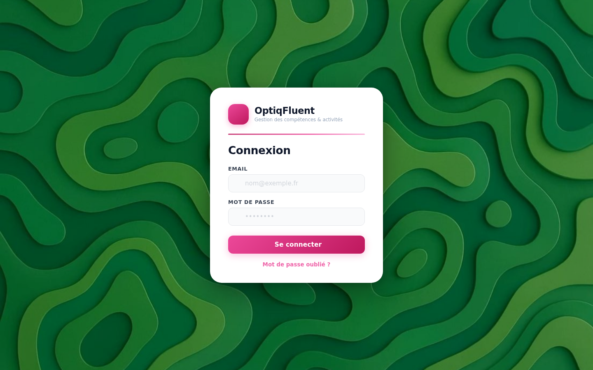
À l'arrivée : les nouveautés
À la première connexion de la journée, une fenêtre Bienvenue résume les nouveautés de l'application (à gauche) et l'activité récente de votre espace (à droite) : qui a modifié quoi, et quand. Cliquez sur C'est parti ! pour la refermer.
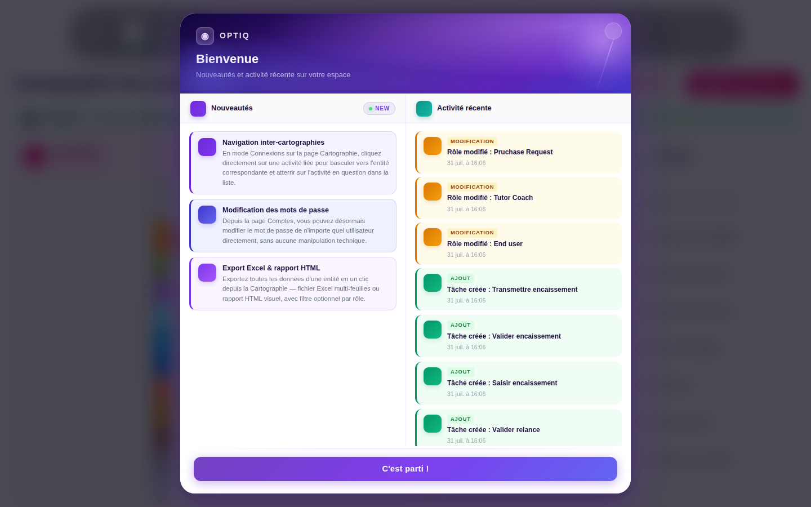
Se repérer : la barre de navigation
La barre en haut de l'écran est votre boussole. Chaque page a son icône et sa couleur — vous retrouverez cette couleur partout dans la page (bandeau, boutons, titres), et dans ce guide.
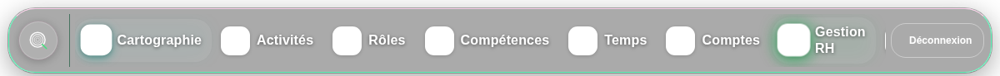
L'idée OPTIQ en 3 minutes
Comprendre la logique avant les boutonsOPTIQ repose sur une idée simple : tout part de la cartographie. Vous dessinez (ou importez) la carte des activités de votre entreprise, et l'application en déduit le reste — les fiches d'activités, les rôles, les compétences à évaluer, les temps à mesurer. Vous ne saisissez jamais deux fois la même information.
- Bande (ligne horizontale colorée) : une compétence clé mobilisée par l'entreprise. Ce n'est ni un service, ni un niveau hiérarchique.
- Activité (case) : une étape de la production d'un flux de travail.
- Flèche : une donnée qui circule d'une activité à l'autre — elle peut être déclenchante (elle démarre l'activité) ou nourrissante (elle l'alimente).
- Losange : un point de décision sur le flux.
Cartographie
Le point de départ — tout le monde la consulte, quelques-uns l'éditentÀ quoi ça sert ? La page Cartographie affiche la carte des activités de votre entité : les bandes de compétences, les activités, et les flux qui les relient. C'est la photo d'ensemble de « comment l'entreprise produit ». À droite, la liste des activités permet d'y accéder directement.
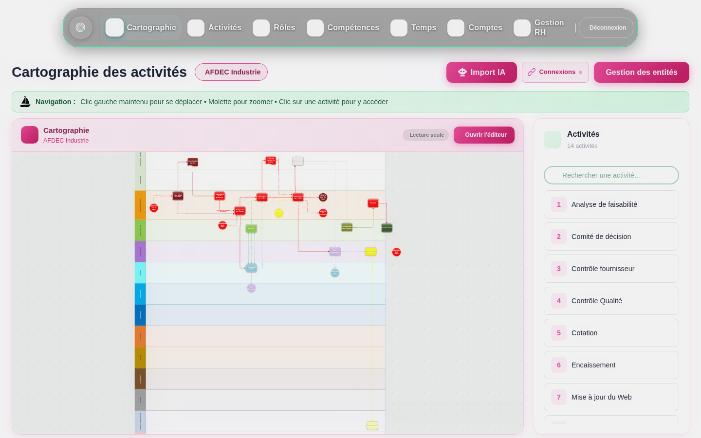
Naviguer dans la carte
- Déplacez-vous en maintenant le clic gauche et en faisant glisser la carte.
- Zoomez avec la molette de la souris.
- Cliquez sur une activité (dans la carte ou dans la liste de droite) pour ouvrir sa fiche détaillée dans la page Activités.
D'où vient la carte ?
Trois possibilités, réservées aux personnes qui administrent la cartographie :
- Import d'un fichier Visio (.vsdx) : l'application reconstruit fidèlement votre schéma existant — formes, bandes, flèches et libellés.
- Import IA : décrivez votre organisation, l'IA propose une première carte.
- Éditeur intégré (bouton Ouvrir l'éditeur) : dessinez ou retouchez la carte directement — l'éditeur dispose de son propre outil de vérification et de correction.
Activités
La fiche d'identité de chaque activité — pour tousÀ quoi ça sert ? Chaque activité de la carte a ici sa fiche complète : qui en est Garant, quelles tâches la composent, quelles données y entrent et en sortent, quelles compétences elle demande, combien de temps elle prend. C'est la page de référence quand on se demande « concrètement, comment se passe cette activité ? ».
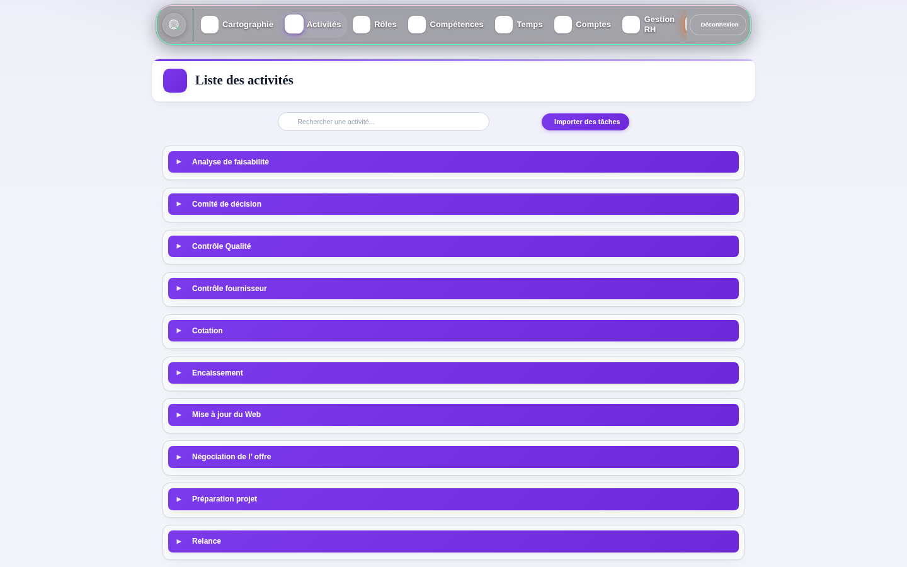
Lire une fiche d'activité
La fiche s'organise en 5 onglets :
- Vue d'ensemble : description, Garant, connexions entrantes/sortantes (les flèches de la carte), contraintes et tâches associées.
- Compétences : ce qu'il faut savoir faire pour produire le résultat attendu.
- Savoirs & SF : les connaissances théoriques et les savoir-faire pratiques.
- HSC : les habiletés socio-cognitives (communication, rigueur…), avec leur niveau.
- Temps : durée et délai standard de l'activité.
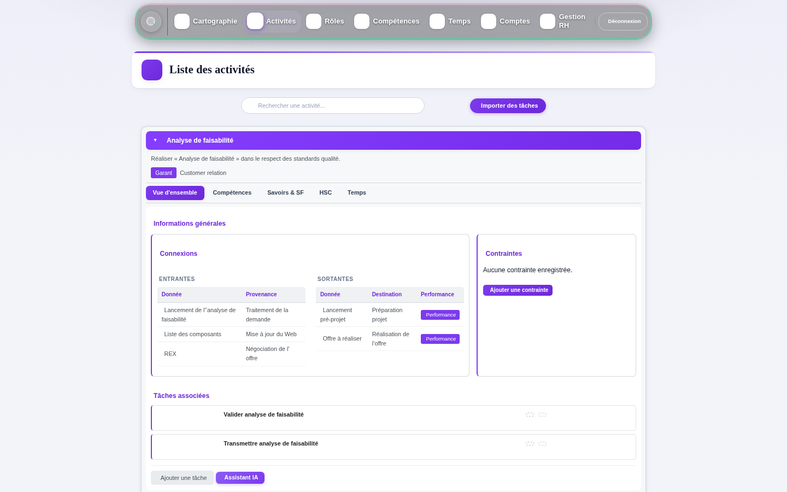
- Recherchez l'activité par son nom dans la barre du haut.
- Cliquez sur sa barre violette pour déplier la fiche.
- Parcourez les onglets selon votre besoin — tout est au même endroit.
Rôles
Qui fait quoi — la vue consolidée par rôleÀ quoi ça sert ? Un rôle ne se déclare pas arbitrairement : il se construit à partir des responsabilités exercées sur les activités de la carte — Garant (il garantit le résultat), Réalisateur ou Approbateur. La page Rôles consolide automatiquement tout ce que l'application sait de chaque rôle : ses activités, ses tâches, ses compétences et ses titulaires. C'est la base d'une fiche de poste vivante.
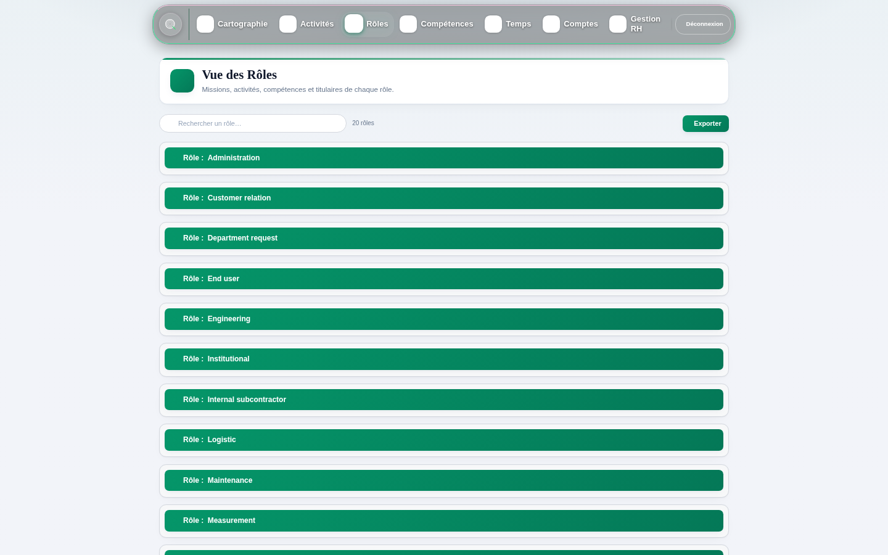
La fiche d'un rôle — 6 volets
Cliquez sur un rôle pour le déplier. Tous les volets se lisent de la même façon :
- Mission générale : la raison d'être du rôle, modifiable directement (Enregistrer).
- Activités où ce rôle est Garant : ses responsabilités principales.
- Activités/Tâches où il intervient (non Garant) : ses contributions.
- Compétences associées aux activités garanties.
- Savoirs, Savoir-faire, Aptitudes et HSC : le bagage attendu, par catégorie.
- Titulaires : les personnes qui portent ce rôle aujourd'hui, avec leur niveau.
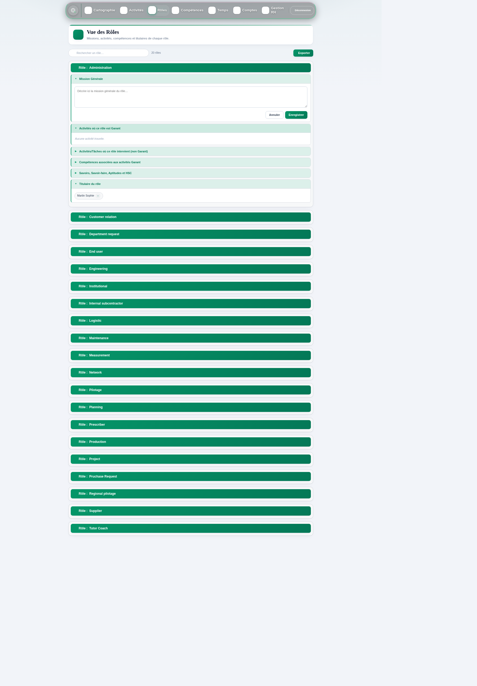
Exporter (fiches de poste, revues RH…)
- Cliquez sur Exporter en haut à droite de la page.
- Choisissez le périmètre : toute l'entité ou un rôle précis.
- Choisissez le format : Excel (fichier multi-feuilles à retravailler) ou HTML (rapport visuel prêt à imprimer). Le fichier se télécharge immédiatement.
Compétences
Évaluer sur le résultat — pour les managersÀ quoi ça sert ? C'est ici qu'un manager évalue ses collaborateurs. La philosophie OPTIQ tient en une phrase : on évalue le résultat produit, pas une liste de cases à cocher. La question n'est jamais « sait-il utiliser tel logiciel ? » mais « le résultat de son activité est-il au niveau attendu ? ». Les savoirs et savoir-faire ne servent qu'ensuite, pour diagnostiquer un écart et bâtir le bon plan d'action.
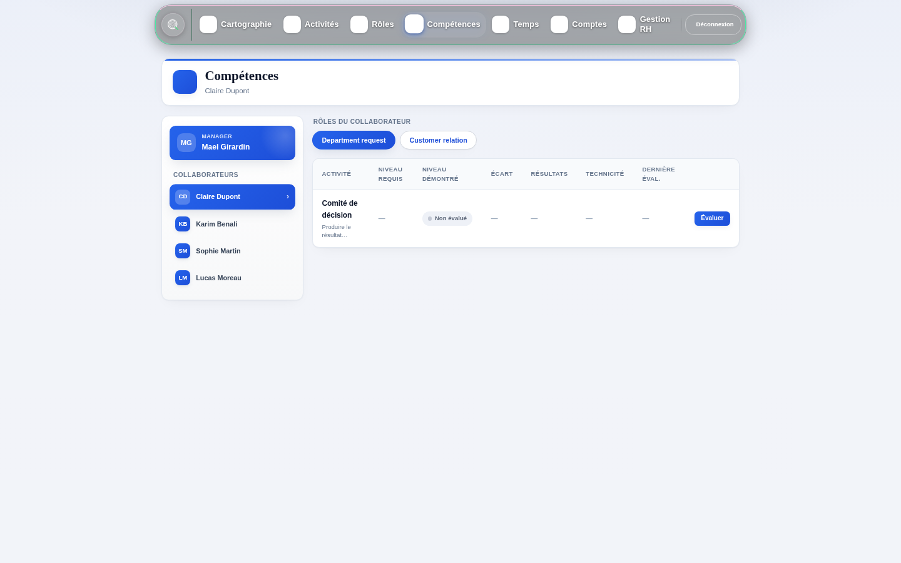
- Choisissez un collaborateur dans la liste de gauche.
- Choisissez un de ses rôles (pilules bleues) : le tableau liste les activités du rôle.
- Cliquez sur Évaluer sur une ligne : le volet d'évaluation s'ouvre, résultat par résultat, sur une échelle de 0 (non démontré) à 4 (expertise).
- En cas d'écart, lancez le diagnostic : l'application vous aide à identifier la cause (compétence, architecture de travail ou conditions d'exécution) et propose un plan adapté.
Temps
Estimer les charges et chiffrer les problèmesÀ quoi ça sert ? La page Temps répond à quatre questions, une par onglet :
- Projet — « Combien coûterait ce projet en temps ? » Assemblez des activités, l'application calcule la charge globale.
- Activité — « Combien de temps prend cette activité, à quelle fréquence ? »
- Rôle — « Quelle est la charge de travail d'un rôle ? » Le tableau se pré-remplit avec les activités du rôle ; vous obtenez l'estimation mensuelle et annuelle.
- Faiblesse — « Combien nous coûte ce problème récurrent ? » Le plus puissant des quatre : voir ci-dessous.
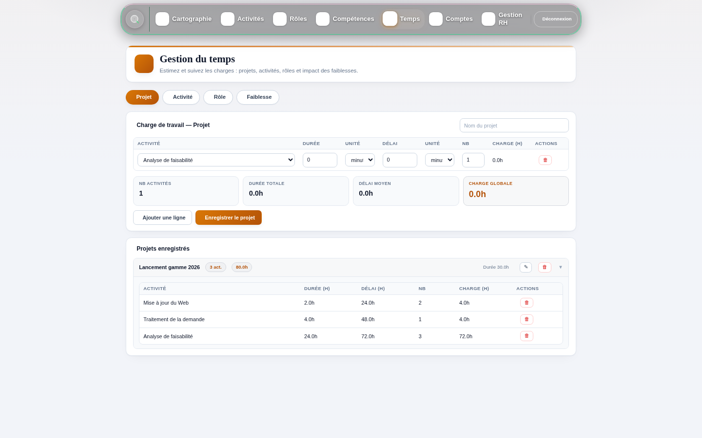
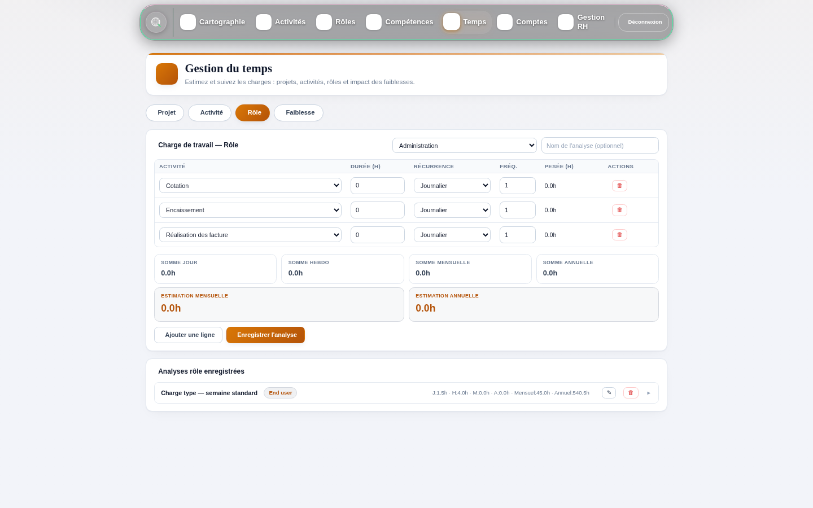
Chiffrer une faiblesse (le réflexe à prendre)
Une « faiblesse », c'est un problème qui revient : des données incomplètes, une machine capricieuse, une validation qui traîne. L'onglet Faiblesse transforme votre ressenti (« on perd du temps avec ça ») en chiffres : surcroît de travail et retard par an.
- Choisissez l'activité concernée, sa récurrence et sa fréquence.
- Décrivez la faiblesse en quelques mots, et indiquez sa probabilité (« 1 sur 4 » = le problème survient une fois sur quatre).
- Estimez l'impact d'une occurrence : temps de travail en plus, attente en plus.
- Cliquez sur Calculer : les résultats s'affichent, du cas dégradé jusqu'au coût annuel. Enregistrer conserve l'analyse.
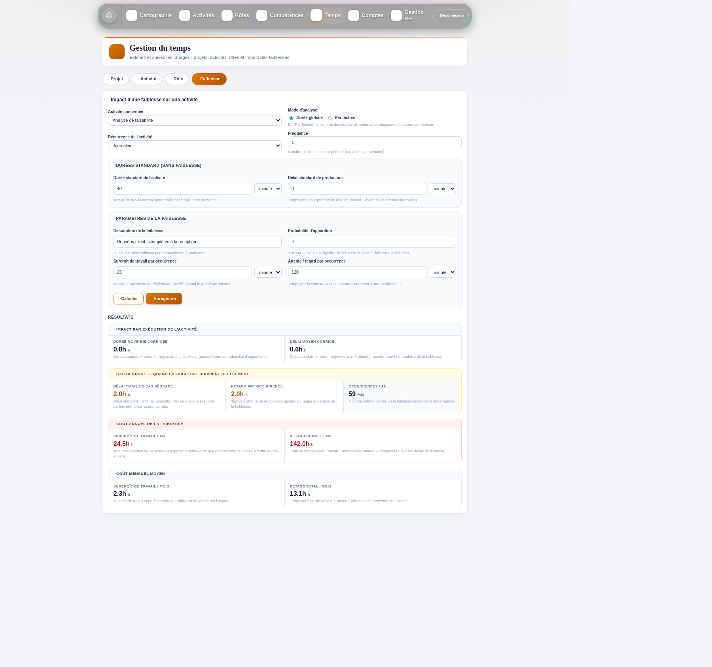
Comptes
Créer et gérer les utilisateurs — administrateursÀ quoi ça sert ? La page Comptes gère les accès à l'application : création d'un utilisateur, import en masse depuis Excel, modification d'une fiche ou d'un mot de passe.
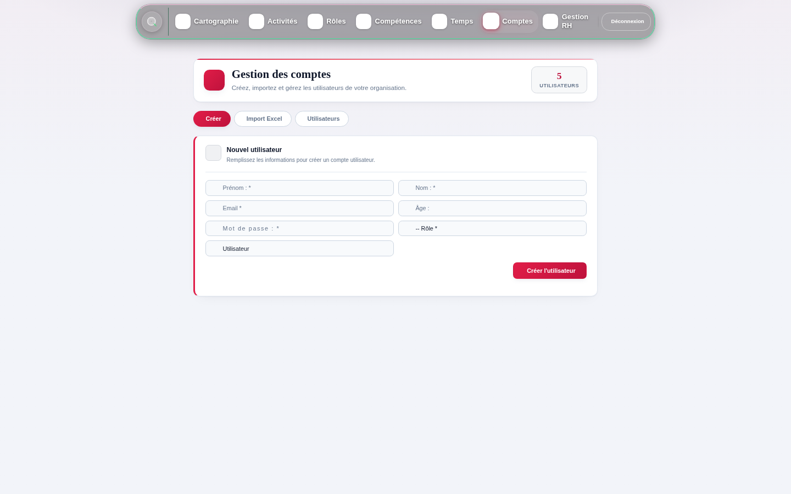
- Onglet Créer : renseignez prénom, nom, e-mail, mot de passe et rôle applicatif (utilisateur ou administrateur), puis Créer l'utilisateur.
- Pour un arrivage groupé, préférez Import Excel : le format attendu est affiché à l'écran (une ligne par personne).
- Onglet Utilisateurs : modifiez une fiche, changez un mot de passe, supprimez un compte.
Gestion RH
Relier les personnes aux rôles — RH et managersÀ quoi ça sert ? C'est la page qui relie les personnes à l'organisation : paramètres de temps de travail de l'entreprise, création des rôles, affectation des collaborateurs à leurs rôles et à leur manager, et synthèse des évaluations de toute l'équipe.
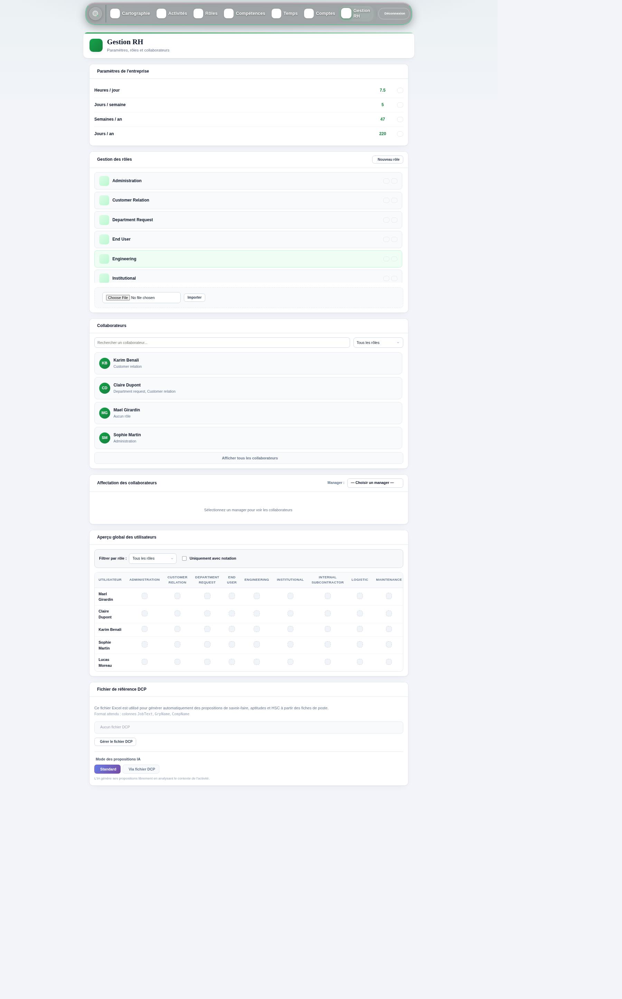
- Renseignez les paramètres de l'entreprise (crayon en bout de ligne) : ils servent aux calculs de charge de la page Temps.
- Affectez chaque collaborateur à son ou ses rôles, et désignez son manager — c'est ce qui alimente la page Compétences.
- Suivez l'aperçu global : une ligne par personne, une colonne par rôle, un feu par évaluation.
Outils
Le référentiel des outils de travailÀ quoi ça sert ? Tous les outils cités dans les tâches (logiciels, machines, instruments…) vivent ici. Créer, renommer, fusionner deux doublons, rattacher une documentation, supprimer : chaque changement se répercute automatiquement dans toutes les fiches d'activités qui utilisent l'outil.
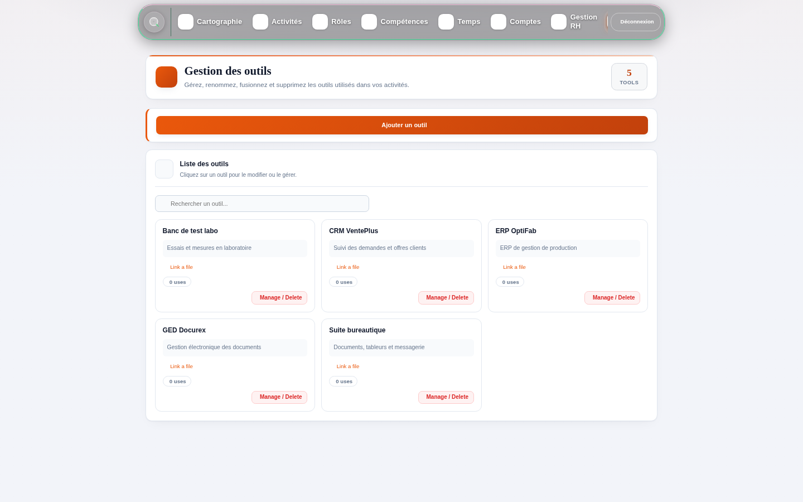
L'IA dans OPTIQ
Une assistante, jamais un pilote automatiqueL'IA intervient à plusieurs endroits de l'application, toujours selon la même règle : elle propose, vous disposez. Rien n'est enregistré sans votre validation.
- Import IA (Cartographie) : générer une première carte à partir d'une description ou d'un fichier Excel.
- Assistant / Chatbot (Activités) : créer ou améliorer une activité en dialoguant.
- Propositions (fiches activités) : suggérer tâches, compétences, savoirs, savoir-faire, aptitudes et HSC — éventuellement à partir de votre fichier de référence DCP (page RH).
- Diagnostic d'écart (Compétences) : aider à qualifier la cause d'un écart et proposer un plan.
Paramètres
Langue pour tous — administration pour les adminsÀ quoi ça sert ? Chacun y choisit sa langue d'interface (français ou anglais, appliquée immédiatement). Les administrateurs y trouvent en plus la section Administration : clé IA (masquée, modifiable à chaud), URL de la base de données et console serveur pour le support.
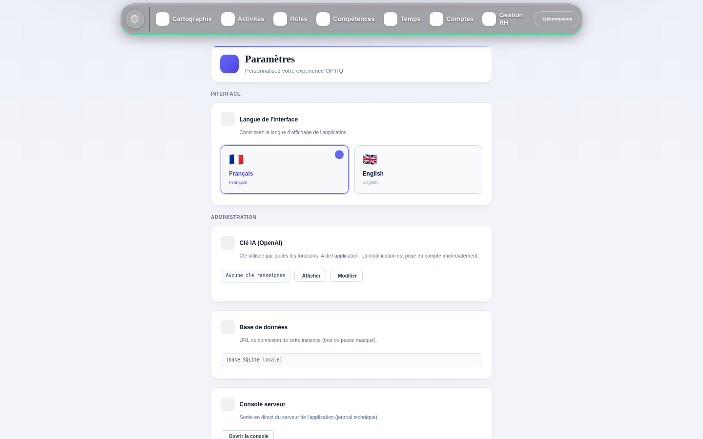
Glossaire
Les mots OPTIQ en une phrase- Bande
- Ligne horizontale de la carte : une compétence clé mobilisée par l'entreprise.
- Activité
- Une étape de la production d'un flux de travail — une case de la carte.
- Donnée déclenchante
- Donnée dont l'arrivée démarre une activité.
- Donnée nourrissante
- Donnée qui alimente une activité sans la déclencher.
- Garant
- Le rôle qui garantit le résultat d'une activité.
- Rôle
- Ensemble cohérent de responsabilités tenues sur des activités ; porté par un ou plusieurs titulaires.
- Titulaire
- Personne qui porte un rôle aujourd'hui.
- Résultat
- Ce que produit concrètement une activité — la base de l'évaluation des compétences.
- Écart
- Différence entre le niveau requis par le rôle et le niveau démontré par la personne.
- Diagnostic d'écart
- Analyse de la cause d'un écart : compétence, architecture de travail ou conditions d'exécution.
- HSC
- Habiletés socio-cognitives (communication, rigueur, coopération…), évaluées de 1 à 4.
- Savoir / Savoir-faire
- Connaissance théorique / geste professionnel maîtrisé en pratique.
- Faiblesse
- Problème récurrent dont la page Temps chiffre le coût annuel en travail et en retard.
- Entité
- Périmètre organisationnel (site, service…) portant sa propre cartographie et ses données.
- DCP
- Fichier de référence des fiches de poste utilisé pour ancrer les propositions de l'IA.